BLACK WATER AI
N.O.L.A.N.™
N.O.L.A.N.™ is Black Water's virtual AI product. Black Water is a search and rescue operation. Kannon™ is our physical AI product. Built for the teams who go in so others can get out: search and rescue, fire, EMS and police.
Patent Pending (U.S. Appl. No. 19/851,696)
BUILT FOR THE TEAMS WHO GO IN
N.O.L.A.N.™ and Kannon™.
NEXT-GENERATION OPERATIONS LEADER
N.O.L.A.N.™ and Kannon™.
BUILT FOR ALL HAZARDS
Intended users
N.O.L.A.N.™ is built for all-hazard response: the range of incidents U.S. search and rescue, fire, EMS and police teams are called to, not a single scenario.
- Search and rescue teams
- Fire departments
- EMS services
- Police departments
- The program offices that stand with them
PROTECTED
Patent Pending
N.O.L.A.N.™ Patent Pending (U.S. Appl. No. 19/851,696)
THE THINKING BEHIND IT
A.E.M.T.™
N.O.L.A.N.™ draws on A.E.M.T.™ (AI-Enhanced Modular Thinking), the design philosophy developed by our founder, Dr Robert J. Di Franco, and the focus of his Doctor of Design (DDes) research. A.E.M.T.™ treats modularity as a way of thinking, and treats AI as a collaborator.
NEXT STEP
Put N.O.L.A.N.™ in front of your team.
Agencies, program offices and investors can request a briefing on Black Water, N.O.L.A.N.™ and Kannon™.